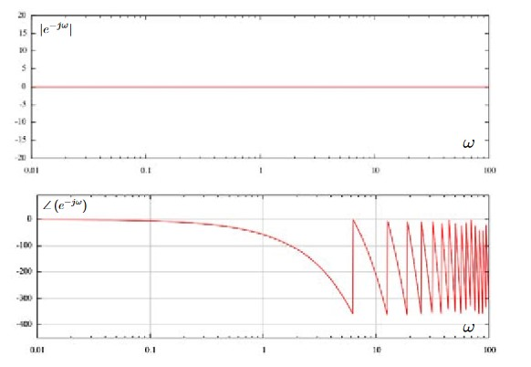

Za modeliranje linearnih mehaničkih sustava, koristimo Newtonove zakone. Za modeliranje rotacijskih mehaničkih sustava, koristimo zakone inercije. Za modeliranje električnih sustava s koncentriranim parametrima, koristimo Kirchofove zakone. Za modeliranje električnih sustava s raspodjeljenim parametrima, koristimo Maxwellove jednadžbe.
Linearni sustav znači da za njega vrijedi princip superpozicije, da odziv na kompleksnu pobudu bude jednak zbroju odziva na pobude od kojih je ta kompleksna pobuda sastavljena. Svaki je realni sustav više ili manje nelinearan. Linearizacija je aproksimacija nelinearnog sustava oko neke radne točke linearnim sustavom. Ona se provodi preko parcijalnih derivacija: \[ \frac{dy}{dt}=f[y(t),x(t)] \] \[ \frac{d \Delta y}{dt} = \frac{\partial f[y(t),x(t)]}{\partial x}|_0 * \Delta x(t) + \frac{\partial f[y(t),x(t)]}{\partial y}|_0 * \Delta y(t) \] Linearizacija se provodi zato što za linearne sustave postoji zaokružena teorija o analizi i sintezi takvih sustava, dok za nelinearne ne postoji.
Prijelazna funkcija, \( h(t) \), je odgovor na step pobudu, jediničnu stepenicu, \( S(t) \). Step-funkcija izgleda ovako:

Težinska funkcija, \( g(t) \), je odgovor na Dircovu delta funkciju, \( \delta(t) \). Diracova delta funkcija je derivacija step pobude po vremenu. Ona je jednaka nuli u svim točkama na realnoj osi osim u nuli, a u nuli je \( \infty \). Integral Diracove delta funkcije u svakom intervalu koji uključuje nulu jednak je jedinici.

Za linearne sustave, težinska funkcija je derivacija prijelazne funkcije po vremenu: \[ g(t)=\frac{d h(t)}{dt} \] Izraz "prijenosna funkcija", \( G(s) \), ima dva značenja:
- Laplaceova transformacija težinske funkcije: \[ G(s)=ℒ\{g(t)\} \]
- Omjer izlaza i ulaza u Laplaceovoj domeni: \[ G(s)=\frac{Y(s)}{X(s)} \]
PT2 član ima ovakvu prijenosnu funkciju: \[ G(s)=K \frac{1}{\frac{s^2}{\omega_n^2} + \frac{2\zeta}{\omega_n}s + 1}\] O vrijednosti ζ ovisi gdje će se nalaziti polovi sustava i hoće li sustav biti stabilan. Ako je \( \zeta = 1 \), to znači da sustav ima dva realna pola lijevo od imaginarne osi oba na istom mjestu (dakle, jedan dvostruki realni pol). Tada njegova prijelazna funkcija izgleda ovako:
Ako je \( \zeta > 1 \), to znači da sustav ima dva realna pola na različitim mjestima. I što je ζ veća, to je udaljenost između ta dva pola isto veća. Za \( \zeta = 5 \), prijelazna funkcija izgleda ovako:
(Primijetite razliku u redu veličine na apscisi!)
Ako je \( 0 < \zeta < 1 \), to znači da su polovi konjugirano kompleksni i u lijevoj poluravnini (lijevo od imaginarne osi), pod kutom u odnosu na negativni dio realne osi \( \alpha = arccos(\zeta) \). Za \( \zeta = \frac{\sqrt{2}}{2} \) (dakle, da su polovi pod kutem od \( \alpha = arccos ( \frac{\sqrt{2}}{2} ) = 45^{\circ} \) u odnosu na realnu os), prijelazna funkcija izgleda ovako:
I što je ζ manji (a α veći), to su polovi bliže imaginarnoj osi, i time je sustav oscilatorniji. Primjerice, za \( \zeta = 0.1 \), prijelazna funkcija izgleda ovako:

Kad je ζ jednak nuli (a α 90o), tada su polovi na imaginarnoj osi, i prijelazna funkcija je sinusoida amplitude 1 pomaknuta za 1 prema gore i frekvencije ωn:
Kada je \( \zeta > 0 \), tada su polovi s desne strane imaginarne osi, i oscilacije rastu (teoretski) u beskonačno, što će uništiti sustav:
Bodeov dijagram (pretpostavljam da je to ono što profesor misli pod ω-domenom) PT2-člana izgleda ovako (preuzeto od Malgorzate Zywno):
Primjer sustava s PT2 vladanjem je serijski RLC krug:

Označimo s u2 napon na kondenzatoru, a s u1 napon na izvoru. Onda je diferencijalna jednadžba tog kruga: \[ LC\frac{d^2u_2}{dt^2}+RC\frac{du_2}{dt}+u_2=u_1 \]
IT1-član ima prijenosnu funkciju: \[ G(s)=\frac{K}{T_Is(Ts+1)} \] Prijelazna funkcija izgleda ovako (ovo ispisuje Octave na
step(1/(s*(s+1)))):
Dalje ne znam.
PI-član ima ovakvu prijenosnu funkciju: \[ G(s)=K\left( 1+\frac{1}{T_Is}\right) \] Mnogi su regulatori PI-regulatori, oni se koriste kad je točnost u stacionarnom stanju važna (što se ne može postići P-regulatorom).
Dalje ne znam.
Idealni PID-član ima ovakvu prijenosnu funkciju: \[ G(s)=K\left(1+\frac{1}{T_Is}+T_Ds\right) \] Realni PID-član (pretpostavljam da je to ono što profesor misli pod PIDT1) ima ovakvu prijenosnu funkciju: \[ G(s)=K\left(1+\frac{1}{T_Is}+\frac{T_Ds}{1+T_Vs}\right), T_V \ll T_D \] Bode dijagram PID-člana je (ovo Octave ispisuje ako joj se zada
bode(1*(1+1/s+s))): 
Joško Petrić (stranica 170) kaže da su taj špic prema dolje u amplitudnoj karakteristici i točka gdje je fazna karakteristika u nuli na frekvenciji \( \frac{1}{\sqrt{T_IT_D}} \).
Kao da se sjećam da sam negdje vidio da je prijelazna funkcija idealnog PID-člana ovakva:
PID-član se često koristi kao regulator, jer se njime postiže brz odziv i točnost u stacionarnom stanju. Problem s PID-regulatorom je što ga je komplicirano postaviti.
Član s faznim prethođenjem ima prijenosnu funkciju: \[ G(s)=\frac{1+Ts}{1+\alpha Ts}, 0<\alpha<1 \] Korekcijski član s faznim prethođenjem služi za podizanje fazne karakteristike u određenom frekvencijskom području. Njegov Bodeov dijagram izgleda ovako (nacrtano u Octavi):

On na višim frekvencijama podiže amplitudnu karakteristiku za \( \frac{1}{\alpha} \), što je obično nepovoljno (jer se na visokim frekvencijama obično nalazi šum, a ne signal).
Ako se dobro sjećam, član s faznim kašnjenjem ima istu tu prijenosnu funkcija, samo je α u nekom drugom intervalu, ali ne mogu sad to naći.
Tt znači "član s mrtvim vremenom", kad je \( y(t)=x(t-T_t) \). t dolazi od njemačkog tot (mrtav). Njegova prijenosna funkcija glasi: \[ G(s)=e^{-T_ts} \] Njegov Bodeov dijagram izgleda ovako (preuzeto od Emilija Frazzolija, pokušao sam napraviti svoj, ali Octave mi javlja nekakvu poruku o pogrešci):

Takvo vladanje ima, recimo, transportna traka koja prenosi neki materijal. Takva su vladanja jako rijetka u električnim i elektroničkim sustavima, ali su česta u mehaničkim.